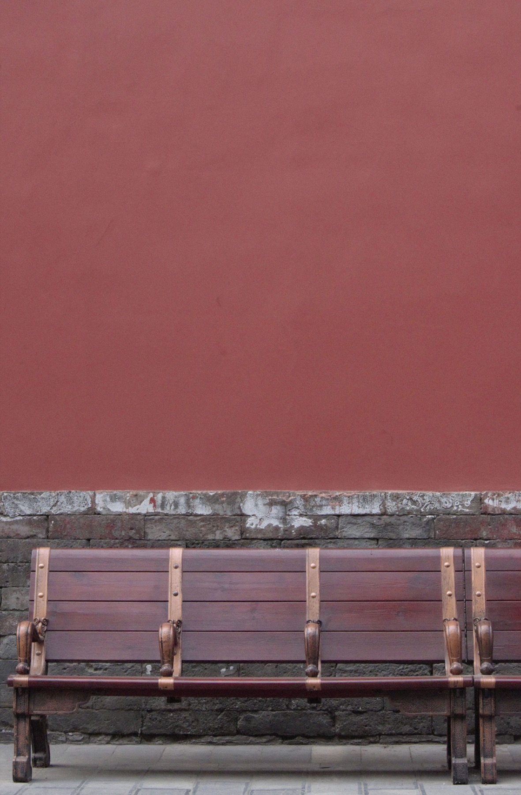

A little about me
Curiosity,
in many forms.
I’m Yuxi Dai, also known as Sissie. I make things through code, images, spaces, and objects. My interests move between stories, systems, and the small details of everyday life.
I grew up in Suzhou. My background in architecture shaped how I think about places and relationships; computational design opened up more ways to explore them. Today, that thinking takes form in interactive maps, installations, visual stories, and material experiments.
I enjoy the movement between looking closely and making something: following a question, trying a method, and seeing what it reveals.
Beyond the screen or studio, there’s usually coconut water nearby—and an avocado plant growing somewhere.

Ways of working
My practice brings together spatial thinking, scripting, data visualization, and interactive storytelling. I’m interested in making connections visible and giving people different ways to explore them.
The form follows the question: sometimes a website or a map, sometimes an image, an installation, or an object.
Selected experience
Freedo Technology
2026–Design Engineer
Product design for embodied intelligence training, spatial intelligence, and web development.
Spatial Intelligence Association
2025–Co-Founder
Creative direction and design for exhibitions, events, and community gatherings.
Background
Columbia University
2024–2025M.S. Computational Design Practice
Syracuse University
2019–2024Bachelor of Architecture · Magna Cum Laude
Say hello.
For a conversation, a shared curiosity, or something we might make together.